Generating Videos with Scene Dynamics
One of the recent works that sounds so interesting to me is "Generating Videos with Scene Dynamics". I am proud of that one of the writers is my counteryman, Dr. Hamed Pirsiavash
The main contribution of this work is using unlabeled video in order to learn a model of scene dynamics for both video recognition tasks (e.g. action classification) and video generation tasks (e.g. future prediction). Their experiments has shown that this proposed model can generate tiny videos up to a second at full frame rate. They have used Generative Adversarial Network for video with a spatio-temporal convolutional architecture
The basic idea for GANs, is the word "adversarial", i.e. there are two netwroks which are competeing with each other: The generator, tries to generate a sythetic image/video, and the descriminator tries to differentiate between real images/videos and sythetic ones.
Generator
In this paper, for the generator, they have used a DNN that inputs low-dimensional random noise and outputs a video. The mentioned generator models the bachground separetly from the foreground. This network produces a static background, with replication over time, and a moving foregound.
The input is 100 dimentional(Gaussian noise)."There are two independent streams: a moving foreground pathway of fractionally-strided spatio-temporal convolutions, and a static background pathway of fractionally-strided spatial convolutions, both of which up-sample. The model learns without supervision to generate these pathways such that, when they are combined, the video looks real. Below each volume is its size and the number of channels in parenthesis."
The figure below show the generator network:

Desciminator
Simultaneously, They have trained a discriminator network, which, not only is able to classify realistic scenes from synthetically generated scenes but also to recognize realistic motion between frames ."We use a five-layer spatio-temporal convolutional network with kernels 4x4x4 so that the hidden layers can learn both visual models and motion models . We design the architecture to be reverse of the foreground stream in the generator, replacing fractionally strided convolutions with strided convolutions (to down-sample instead of up-sample), and replacing the last layer to output a binary classification (real or not)."
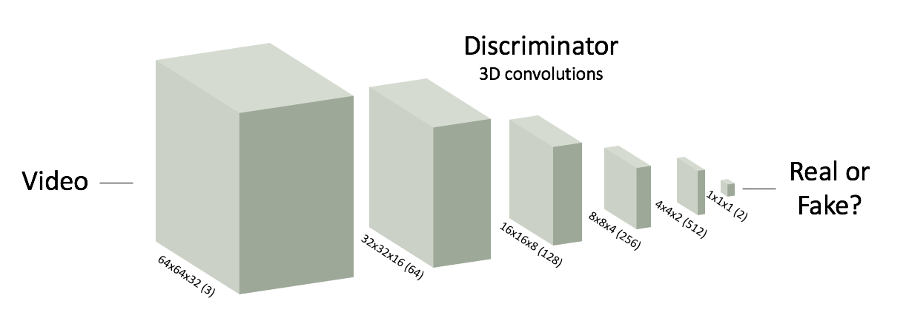
Below is an example of videos for "Beach","Train" and "Golf", respectively, generated by their generative video model. As you can see, the motions are fairly resonable.

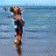
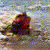
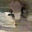
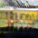
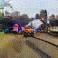
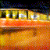
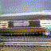
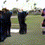
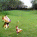
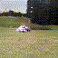
for more information, including implementation details, see
here